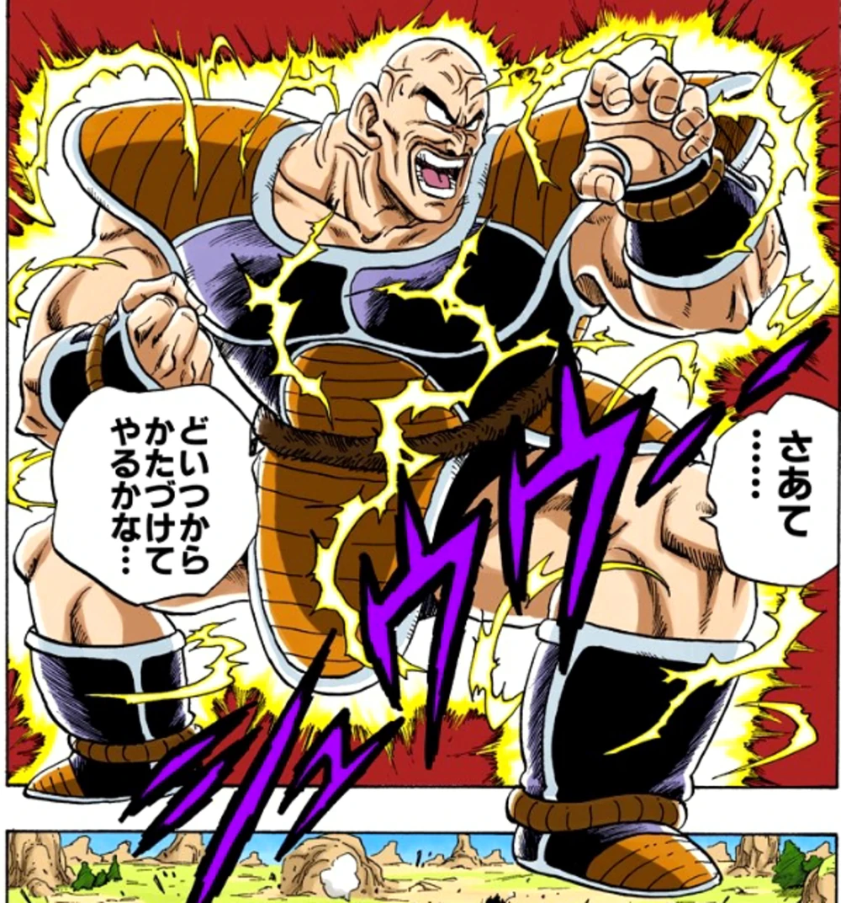

Nappa (ナッパ Nappa) is a mid-class Saiyan warrior from Planet Vegeta, and Vegeta's partner in combat.
Prior to the destruction of Planet Vegeta, Nappa was the general of the Saiyan Army and aide/partner to the young prince, Vegeta.
After his race's demise, he, along with Vegeta and Raditz, worked as soldiers directly under Frieza, which led him to Earth.
Nappa is the secondary antagonist of the Vegeta Saga.
Nappa has quite a destructive personality and loves demolition to an extreme level.
When arriving on Earth, the first thing he asks Vegeta is if he can destroy a town.
When taking time off to wait for Goku, Vegeta allows him to destroy as many things and places as he wants (in the anime only), as long as he does not waste enough energy to break a sweat.
Nappa proceeds to demolish an entire Navy fleet division as well as an aerial raid, smashing through many jets and helicopters before leveling a slew of ships.
Despite this, however, he usually congratulates his victims when they utilize attacks that come close to killing him, as evidenced when he congratulates Tien Shinhan on his use on a Spirit Tri-Beam that shattered his Battle Armor, citing that, had his aim been better, it would have severely injured him.
Nappa also has a very cocky personality, as he enjoys toying with his opponents.
Nappa is somewhat sadistic, and his sadism is strongest by far towards Goku, and he repeatedly voices the intention to kill Goku's friends and son before his eyes as revenge for his treason towards his own race (by siding with Earthlings instead of the Saiyans).
He tends to fight first and makes use of his brawn more so than his brain.
However, his great ego would immediately vanish the second someone causes him a bruise or scar and would decide to kill them slowly and painfully as a result.
He is, in this instance, vain to the extent that he feels his appearance should remain unscathed (though in the Japanese version, his rage against Krillin is fueled by the blow to his pride over being wounded by a much weaker opponent).
However, he would still eliminate anyone as quickly as possible when losing patience with them.